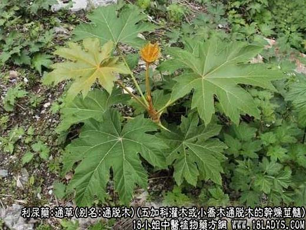
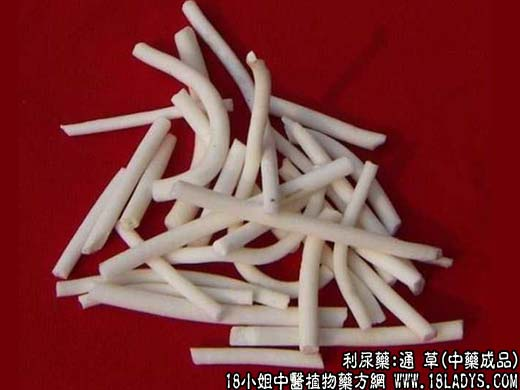
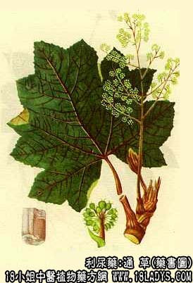

通草为较常用中药《神农本草经》列为中品。植物来源复杂。商品主要分空心通草和实心通草两类。两者同等药用，以前者为主。
1、空心通草
别名：大通草，通脱木。
来源：为五加科灌木或小乔木植物通脱木的干燥茎髓。多为野生。
产地：主产于贵州、云南、四川、广西和台湾等地。
性状鉴别：茎髓圆柱形，长约30～50厘米，直径1.5～2厘米。表面洁白色，有纵向纹理。中央有直径约0.5～1厘米的半透明圆形薄膜，纵剖后可见排列整齐的间隔。体极轻而疏松，浮于水，并有吸湿性。易折断，折断面平坦，显银白色闪光。气无，味淡。
以条粗壮，色洁白，中央有薄膜者为佳。
2、实心通草
别名：小通草、通草棍。
来源：为旌节花科小乔木植物通条树及其同属植物的干燥茎髓。均为野生。
产地：四川、湖北、江西、广西、山西、甘肃等地。
性状鉴别：茎髓呈细圆柱形，长短不一，直径0.4～1厘米。表面白色或微黄色，平台，无纵向纹理，质松软，可弯曲，手捏能使其变形。断面洁白色，无空心。水浸后外表及断面均有粘滑感。气无，味淡。
以条均匀，色白，无霉斑者为佳。
主要成分：空心通草含肌醇。
功效与作用：1、利尿。
2、促进乳汁分泌。
炮制：切段生用。
性味：甘、淡、寒。
归经：入肺、胃经。
功能：利尿清热，通气下乳。
主治：湿温尿赤，淋病，尿闭，水肿，乳汁不下。
临床应用：1、用于产妇乳少，为下乳常用药。常配王不留行和穿山甲，如下乳方。
使用注意：孕妇慎用。
用量：3～6g。
处方举例：下乳方：通草6g，炙山甲9g，王不留行9g，水煎服。如能加猪蹄90g，同煎服则更佳。
注：1、将大通草用特制刨刀旋成纸状，然后切成9～10厘米的方形片，称“方通”，多做手工艺品。在切方通时，切下的边缘称为通草丝。
2、实心小通草的来源极为复杂，凡旌节花科及其同属的植物如水凉子，卵叶旌节花，柳叶旌节花，云南旌节花，四川旌节花等的茎髓，均作小通草用。商品上不易区分。有的地区如内蒙古、河南、陕西、甘肃、上海、湖南、湖北等地，还用蔷薇科植物棣棠花的茎髓作通草药用，其茎髓与通条树的茎髓类似，仅表面颜色较深，多呈黄白色，有浅纵沟纹或纵纹。质较硬，手捏不易变形，水浸后无粘滑感。
3、云南和四川使用另一种实心通草，茎髓呈圆柱形，直径1.5～4厘米。表面黄白色或黄棕色，有浅纵纹。体轻质较致密，手捏之不易变形，水浸后无粘滑感，无气味。有的认为系通脱木老茎的茎髓。原植物未详，尚待进一步考证。
4、江苏、浙江产一种梗通，其来源为豆科一年生半灌木状草本植物合萌茎的去净外皮的干燥木质部。商品性状呈圆柱形，上端尖细，直径1～3厘米。表面黄白色，不平坦，隐约可见同心环纹，中央有小孔。无气味。过去多折成小段当瓶塞用，在通草货源不足时也作通草药用。